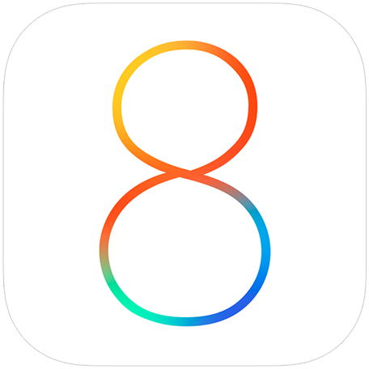

Die öffentliche geoquest-App steht kurz vor der Veröffentlichung in den App Stores von Google und Apple.
Bis dies der Fall ist, kannst du die Apps manuell auf deinen Android-Geräten installieren.
Für eine iOS-Version können wir dich zu Testflight einladen.
APK-Download (ca 30MB)

Schicke uns eine Anfrage, um zum geoquest-Testflight eingeladen zu werden:
contact@quest-mill.com
The public geoquest app is going to be released on the App stores by Apple and Google soon.
Until then, you can install the app manually on your Android devices.
For an iOS-version we can invite you to our TestFlight.
APK-Download (about 30MB)
Send us an email to be invited to the geoquest TestFlight:
contact@quest-mill.com